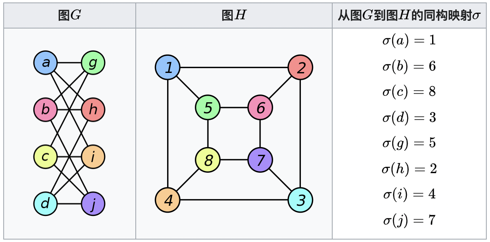
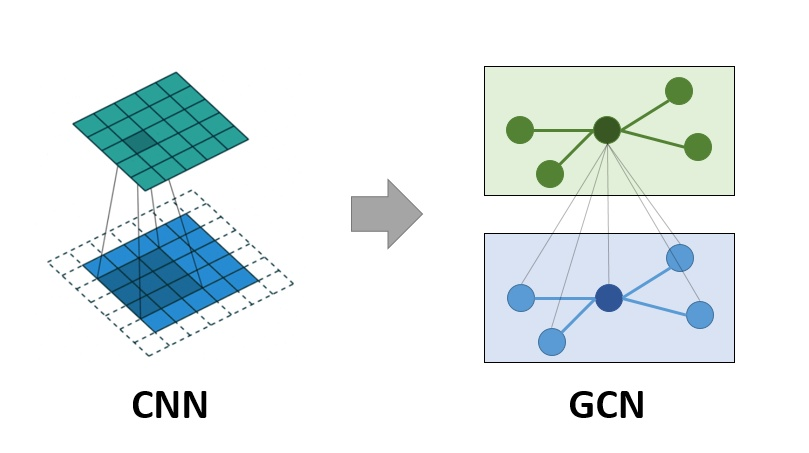
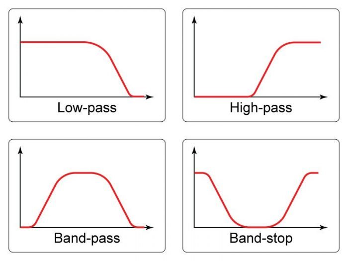
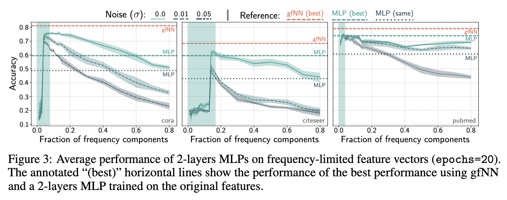
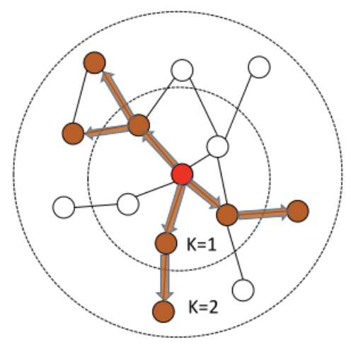

图这种数据结构
图是啥
图在不同领域会有一些差异，比如数学上的图论研究，数据科学上的图关系性数据库，在计算机工程领域上的图数据结构。
这里主要的研究对象是图数据结构（Graph）。
图的定义
图表示为定点与边的集合，记为 $G = (V, E)$，其中 $V$是定点的集合，$E$是边的集合。
图的类型
- 同构图：图中的节点类型和关系类型都有且仅有一种
- 异构图：节点类型或关系类型不只一种
- 属性图：相比异构图，属性图给节点或边增加了属性信息
- 非显式图：数据之间没有显式的定义关系，需要一句某种规则和计算方式将关系表达出来，如3D视觉中的点云数据
图的组成
- 有向图：边有方向，$<v_{i}, v_{j}>$
- 无向图：边无方向，$<v_{i}, v_{j}> = <v_{j}, v_{i}>$
- 加权图：每条边都有是个不同的实数，通常是$\in[0, 1]$
- 无权图：可理解为每条边的权重都相同，都是1
- 非连通图：存在孤立的定点，无任何边与之相连
- 连通图：不存在孤立顶点
- 二部图：任一边$e_{ij}$，$v_{i} \in A, v_{j} \in B$，如用户与商品
- 邻居：存在以一条边相连
- 度：以$v_{i}$为端点的数目，所有节点的度与边数关系为 $\sum_{v_{i}}deg(v_{i}) = 2|E|$
- 子图：$G^{‘} = (V^{‘}, E^{‘})$的顶点分别是另一个图$G = (V, E)$的顶点的子集和边的子集
- 路径：从顶点$v_{i}$出发，沿着一些边经过一些顶点$v_{p1}, v_{p2},\cdots, v_{pm}$到达顶点$v_{j}$，则经过的边就构成连路径，这里有路径的长度，顶点的距离，k阶邻居，k阶子图等概念。
图的存储
邻接矩阵
用矩阵来表示图中节点与节点的关系。公式为：
$$
A_{ij}= \begin{cases}
1, & \text {if $(v_{i}, v_{j}) \subseteq E $} \
0, & \text {else} \end{cases}
$$
邻接矩阵经常是稀疏的，因此常用稀疏矩阵存储，空间复杂度能到$O(M)$。
关联矩阵
与邻接矩阵不同，关联矩阵是用矩阵来表示图中节点与边的关系。公式为
$$
B_{ij}= \begin{cases}
1, & \text {if $v_{i}$与$e_{j}$} 相连\
0, & \text {else} \end{cases}
$$
一种特殊的图数据——图像
图是一种数据结构关系，图像也是一种数据结构关系（像素），如果把图像中的像素视为一个节点，那么某一像素附近的栅格就等价于图数据结构中的邻居，像素之间的空间坐标的连线就是图数据中的邻居之间的边。这样图像数据就演变成了非常规则的图数据。这样，在CNN中的各种卷积、池化操作可以推广到更普遍的非结构化的图数据上。达到数据表示、非结构化图数据分类、图表示学习等目的。
这里看一个经典的图同构问题，可能有点感觉。

看上去并不相似的两个图，可能是完全等价的。
卷积神经网络——CNN
卷积和池化
CNN是作为常用的模型，这个不详细推导，仅说明一些主要过程。卷积神经网络中最重要的两个过程为卷积与池化。
卷积诞生于信号领域，它针对某个线性不变的系统，给定输入信号 $f(\tau)$ 和系统响应 $g(\tau)$ ，得系统的输出。
数据定义为
$$(f * g)(t) = \int^{\infty}_{-\infty}f(\tau)(t - \tau) d \tau$$
为了处理这种信号变换，产生了著名的卷机定理，将时域中复杂的卷积运算转换为频域中简单的乘积运算，如下式。
$$(f * g)(t) \iff F(w)G(w)$$
对于图像上的卷积，就把连续变量的积分变成了离散变量的求和，原理相同，然后进行乘积运算。$F$ 为输入的图像，$G$ 为滤波器，也就是我们所说的卷积核。常用的卷积操作有单通道卷积和多通道卷积。
除了常用的单通道卷积和多通道卷积，随着图像任务越来越丰富，也衍生出了很多其他的卷积形式，如 $1 \times 1$ 卷积，转置卷积，空洞卷积以及分组卷积等。
除了卷积，CNN中还有一个重要的组成是池化，其主要目的是降维，以降低计算量。并提供一些平移不变性等特性。常用的有最大池化和平均池化，顾名思义，最大池化就是取滑窗的最大值，平均池化就是取滑窗的平均值。
卷积神经网络的特点
基于卷积层于池化层，容易理解卷积神经我网络有如下特点：
- 局部连接
- 权重共享
- 层次化表达
- 平移不变性
简单回顾了卷积神经网络，现在可以看图卷积神经网络了。
图卷积神经网络——GCN
CNN与GCN
图卷积是一个很深的领域，追其根本，是在处理图信号，其设计到拉普拉斯矩阵和图傅立叶变换，整个过程非常复杂，这里不作深入说明，仅论述GCN的工作方式。
前面有说图像是一种特殊的图数据，两者的网络连接方式也非常相似，用一幅图直观感受一下。

同样在学习任务上，两者同样具有很强的相似性，GCN及其衍生模型主要解决的任务包括图分类（CNN中的图像分类）和节点分类（CNN中的目标检测）。
GCN提供了端到端的学习表示
图数据的处理有两类比较经典的方式，分别是：
- 基于手工特征：基本思想是将图中节点的结构信息以一些图的统计特征进行替代，如节点的度、节点的PageRank值等，然后送到下游进行学习。
- 基于随机游走：基本思想是将图中节点所满足的关系与结构的性质通过随机游走的采样方式映射到一个新的向量空间去，然后送到下游进行学习。
基于手工的特征的特征向量需要人为定义，工作量大，而且很难确定这些统计特征是否对后面的学习任务是否有用。基于随机游走的方法相比基于手工更加高效，但是由于随机游走采样，提取的图信息可能不够完全，而且对于连通图很大时，游走序列难以控制。
GCN提供了一种端到端的学习方式，一端是数据，一端是任务，相比前面的两种方式，GCN至少有下面两个优势。
- GCN对表示学习与任务学习一起进行端到端的优化，相比先提取特征向量，再进行任务学习，更能有效的训练图数据的表示。
- GCN对结构信息和属性信息的学习是同步进行的，而很多时候图的属性信息和结构信息是互补关系，特别是对于一些稀疏图，这样的同步学习非常有用。
GCN是一个滤波器
为了理解图卷机是滤波器，先理解一下图滤波器（在图信号滤波器前，还有离散信号滤波器、时域信息，频域信息（图上是空域信息）），在图信号中，图滤波器是图信号的频域信息中各频率分量的强度进行增强和衰减的操作，用公式表示为
$$y = Hx = \sum_{N}^{k = 1}(h(\lambda_{k})x_{k})v_{k}$$
图滤波器有下面的性质：
- 线性：$H(x + y) = Hx + Hy$
- 无序（这是因为图信号变换是傅立叶变换，这点差别与小波变换）：$H_{1}(H_{2}x) = H_{2}(H_{1}x)$
- 当 $h(\lambda) \neq 0$时，滤波操作可逆
常用的滤波器有四种，分别是低通滤波器、高通滤波器、带通滤波器和带阻滤波器，如下所示：

滤波器通过低频并阻止高频，则称为低通滤波器；如果它阻挡低频并通过高频，它就是一个高通滤波器。带通滤波器，其仅通过相对窄的频率范围，带阻滤波器，其仅阻挡相对窄的频率范围。
对于图信号处理中的卷积操作，经过简单推导，不难得出
$$x_{1} * x_{2} = H_{x_{1}}x_{2}$$
其中$H_{x_{1}}$是一个图位移算子。所以从这个层面上图卷机等价于图滤波。
更进一步，在 Revisiting Graph Neural Networks: All We Have is Low-Pass Filters 这边论文中，作者认为GCN是低通滤波器是在，只对特征向量进行低通滤波，不具有非线性流形学习特性。放一个直观的图感受一下。

图神经网络——GNN
图神经网络
GCN的出现带动了神经网络在图数据学习中的价值，后续就把所有在图数据中使用神经网络学习的方法都归集为了GNN（图神经网络）。
GCN的本质是迭代式的聚合邻居，后续出现了很多在此基础上改进的模型，以提升在不同图数据上的适应性。
这里简单描述GraphSAGE的变化，后续有时间再聊常用的GAT和R-GCN。
GraphSAGE
采样邻居
相比GCN，GraphSAGE有两个改进，分别是采样邻居与聚合邻居。
GCN的训练是一种全图模式，每一轮迭代的梯度需要所有节点参与，但是通常DNN模型是需要mini-batch训练的，这在大规模数据的工程化实现非常重要。GraphSAGE对聚合邻居随机采样来控制运算时节点k阶子图的数据规模，然后在采样的字图上随机组合来完成小批量学习。
以下面采样方法为例

对于GCN而言，如果要得到2层特征，图中的所有节点都需要参与计算，这对于一个大规模的图而言，这非常不现实。
- 执行 $k$ 层GCN，则 $k$ 阶子图平均出现 $1 + d + d^{2} + \cdots + d^{k}$ 个节点，这会导致非常高的计算复杂度。
- 真实场景中经常会出现超级节点，这类型节点高层特征计算的代价非常高
GraphSAGE为了解决这个问题，给出了采样倍率的解决方法，做法是设每个节点在第 $k$ 层的邻居采样倍率（每个邻居采样的一阶邻居总数不超过的数量）是 $S_{k}$ ，如此，任意一个中心节点的表达计算，所涉及的总节点数控制在了 $O(\prod_{k = 1}^{k}S_{k})$ ，对于超级节点，GraphSAGE选择了均匀采样的方法。如此，GraphSAGE可以把子图节点规模控制在阶乘级数以下，有利于工程化实现。
聚合邻居
聚合算子需要满足自适应（不管节点邻居如何变化，输出维度都是一样的）和排列不变性（图数据本身么有顺序，所以不管邻居节点的排列顺序如何，输出结果都是一样的），常用的算子为：
- 平均/加权聚合算子
- 长短时记忆（LSTM）算子
- 池化算子
其他图神经网络
GAT
GAT即图注意力网络。它使用注意力机制来对邻居节点进行聚合，实现不同邻居权重对自适应分配。
R-GCN
实际工程场景中，节点之间的关系通常是不同的，例如在知识图谱中，关系的类别可能会有非常多，而通常使用的GCN、GraphSAGE以及GAT都只处理单一节点关系的图。R-GCN的出现，就是将图卷机神经网络拓展到包含多种实体关系的图数据中。核心是做了两次聚合操作（分别针对节点和关系权重）。
图神经网络内容很丰富，一片文章远远写不完，这片文章只是从常用的CNN走到GNN，前路多艰。
end～